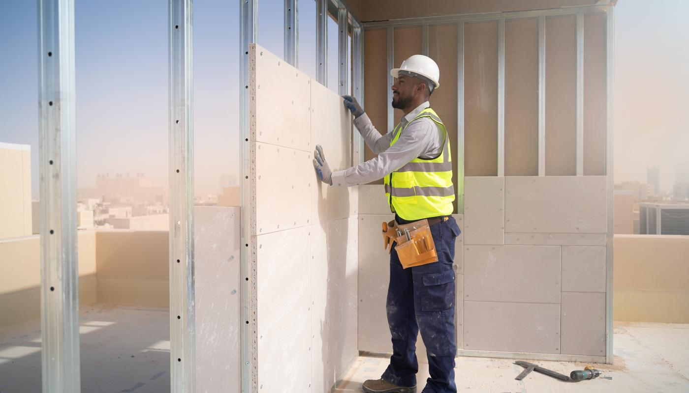

مقاول بناء ملاحق اسمنت بورد | 0502833163
تحتاج بعض المنازل إلى غرفة إضافية أو مكتب مستقل أو مساحة للخدمات، ويبحث أصحابها عن طريقة بناء تناسب الموقع وتسمح بتشطيب ينسجم مع العقار، ويأتي بناء ملاحق اسمنت بورد ضمن الخيارات التي تستحق المقارنة، خاصة عندما يكون المطلوب استخدام ألواح أسمنتية ضمن نظام جدران وهيكل مناسبين.
وسنوضح في مقالنا اليوم مميزات الأسمنت بورد وحدود استخدامه، وكيف تختار الألواح والعزل والسقف، وسنتناول خطوات التركيب والتشطيب والعوامل المؤثرة في السعر، حتى تعرف ما الذي ينبغي تضمينه في عرض المقاول، وكيف تميز بين تكلفة الجدران وتكلفة ملحق مكتمل التجهيز.

بناء ملاحق اسمنت بورد
يعتمد بناء ملاحق اسمنت بورد على تثبيت ألواح أسمنتية على هيكل مصمم للمشروع، ويمكن تنفيذ طبقات داخلية وخارجية ومواد عزل وفق الاستخدام، وتختلف التفاصيل بين غرفة للسكن ومكتب وغرفة تخزين أو مجلس مستقل.
ويبدأ بناء غرف وملاحق اسمنت بورد بتحديد موقع الإضافة وأبعادها وعدد الفتحات والخدمات المطلوبة، ثم تُراجع الأرض أو حالة المبنى القائم قبل اختيار الهيكل، ويظل تقييم الأحمال ضروريًا عند اقتراح إضافة فوق السطح، حتى عندما يكون النظام أخف من بعض بدائل البناء.
ويُناقش أفضل مقاول بناء ملاحق اسمنت بورد بالرياض نوع الجدار والسقف والأرضية قبل التسعير، ويشرح مسؤولية التوريد والتركيب والتشطيب، كما يحدد الأعمال التي تحتاج إلى مختصين والإجراءات المطلوبة حسب طبيعة العقار.
وتختلف تكلفة بناء ملحق اسمنت بورد جاهز حسب معنى التجهيز المتفق عليه، فقد يشمل العرض الهيكل والألواح فقط، أو يمتد إلى الأرضيات والكهرباء والأبواب والتكييف، ولذلك ينبغي كتابة البنود بدل الاعتماد على وصف عام.
مميزات ألواح اسمنت بورد في بناء الملاحق
يسمح بناء ملاحق اسمنت بورد بتنفيذ جدران قابلة لخيارات تشطيب متعددة عندما يُختار المنتج والنظام المناسبان، وتُقيّم المميزات حسب مواصفات المشروع، دون تعميم خصائص لوح معين على جميع الألواح المتاحة. ومن أهم المميزات التي تميز ألواح الأسمنت بورد في بناء الملاحق:
1. مرونة التصميم والتشطيب
تتيح الألواح إنشاء أسطح يمكن تجهيزها للدهان أو لبعض أنواع الكسوات وفق تعليمات المنتج، ويُراعى وزن التشطيب وطريقة تثبيته، كما يسمح بناء غرف وملاحق اسمنت بورد بتوزيع الفتحات والخدمات حسب المخطط قبل إغلاق الجدران.
2. ملاءمة تطبيقات تتعرض للرطوبة
توجد ألواح مصممة للاستخدام الخارجي أو المناطق الرطبة، ويحتاج اختيارها إلى مراجعة بيانات الشركة المصنعة، وتظل الفواصل والفتحات والمناطق المبتلة بحاجة إلى تفاصيل حماية وعزل، لأن تحمل اللوح للرطوبة لا يمنع تسرب المياه عبر الجدار تلقائيًا.
3. تنظيم أعمال التركيب
يمكن تجهيز القطاعات والألواح وتركيبها ضمن خطوات متتابعة، ويساعد تنسيق المقاسات والتوريد على تقليل التعديلات أثناء التنفيذ، لكن المدة النهائية تشمل تجهيز الموقع والخدمات والسقف والتشطيب، ولا تُحسب من زمن تثبيت الألواح وحده.
4. إمكانية تحسين الأداء الحراري والصوتي
يعتمد الأداء على تكوين الجدار كاملًا، ويشرح مقاول ملاحق اسمنت بورد عازل للحرارة والصوت نوع الحشو وسمكه وطبقات التكسية وتفاصيل إغلاق الفراغات، كما تُراجع النوافذ والأبواب والسقف لأنها تؤثر في راحة الغرفة.
أنواع ألواح الاسمنت بورد المستخدمة
تختلف الألواح في تركيبها وسماكاتها وأبعادها واستخداماتها المسموح بها، ويختار أفضل مقاول بناء ملاحق اسمنت بورد بالرياض المنتج حسب التطبيق، ثم يراجع توافقه مع الهيكل والمثبتات ومواد الفواصل والتشطيب.
ويحتاج بناء ملاحق اسمنت بورد إلى التمييز بين الألواح المخصصة للداخل والألواح المناسبة للخارج، كما تُراجع خصائص المنتج عند استخدامه في حمام أو مطبخ، ولا يكفي وصف اللوح بأنه أسمنتي للحكم على جميع استخداماته.
ويؤثر نوع الألواح وعدد طبقاتها في سعر متر بناء ملاحق اسمنت بورد في الرياض، ويُحدد ما إذا كان الحساب يشمل وجهي الجدار والهيكل والعزل، أو يقتصر على توريد الألواح وتركيبها على وجه واحد.
ويطلب مقاول ملاحق اسمنت بورد عازل للحرارة والصوت مواصفات نظام متكامل يناسب الاستخدام، ويُفضل توثيق الأداء المطلوب ومواد تنفيذه، بدل الاكتفاء بوعد بالعزل دون بيان مكونات الجدار.
خطوات تركيب وبناء غرف ملاحق اسمنت بورد
يحتاج بناء غرف وملاحق اسمنت بورد إلى ترتيب الأعمال بحيث تُراجع الأجزاء التي ستختفي خلف الألواح، وتُنسق الخدمات والتثبيت والعزل قبل التشطيب، كما تُحدد نقاط تثبيت الأجهزة والأثاث الثقيل مبكرًا. وتسير أعمال التنفيذ وفق مراحل تناسب الموقع والتصميم:
1. المعاينة والتصميم
تُرفع المقاسات ويُحدد الاستخدام والارتفاع والفتحات، ثم تُراجع حالة الموقع وإمكانية الإضافة ومتطلبات الترخيص، ويبدأ بناء ملاحق اسمنت بورد فوق مبنى قائم بعد تقييم مناسب لحالته وأحمال المشروع.
2. تجهيز الأساس
يُحدد الأساس أو نظام الارتكاز وفق التصميم وبيانات الموقع، وتُراجع المناسيب وعلاقة الجدار بالأرضية وحمايته من المياه، كما تُجهز تمديدات الخدمات التي تحتاج إلى المرور أسفل الأرض قبل إكمالها.
3. تركيب الهيكل الحديدي
تُختار القطاعات والحماية والتثبيت وفق متطلبات النظام، وتُراجع الاستقامة والتدعيم حول الأبواب والنوافذ، ويتحقق أفضل مقاول بناء ملاحق اسمنت بورد بالرياض من مطابقة المواد للمواصفات قبل تغطيتها.
4. تثبيت ألواح الاسمنت بورد
تُركب الألواح بالمثبتات والمسافات المناسبة للمنتج، وتُنسق طبقات الحماية والعزل والخدمات، كما يراجع مقاول ملاحق اسمنت بورد عازل للحرارة والصوت استمرارية الحشو وإغلاق المواضع التي قد تنقل الهواء والصوت.
5. التشطيب النهائي
تُعالج الفواصل والزوايا بمواد متوافقة، ثم يُجهز السطح للتشطيب المطلوب، وتُركب الأبواب والنوافذ والتجهيزات، وتُراجع تكلفة بناء ملحق اسمنت بورد جاهز للتأكد من شمولها أعمال الاختبار والاستلام ورفع المخلفات المتفق عليها.
أهمية السقف في غرف وملاحق اسمنت بورد
يتعرض السقف للشمس والأمطار، ويؤثر اختياره في حرارة الغرفة وحمايتها من المياه، ولذلك يحتاج بناء ملاحق اسمنت بورد إلى سقف مصمم للأحمال والاستخدام والتصريف، وليس مجرد تغطية تُختار بعد إنهاء الجدران.
ويحدد مقاول ملاحق اسمنت بورد عازل للحرارة والصوت طبقات السقف والعزل وتفاصيل اتصالها بالجدران، كما تُراجع الفتحات الخاصة بالتكييف والخدمات، ويُجهز الوصول إلى نقاط الصيانة دون الإضرار بالتغطية.
ويُنسق بناء غرف وملاحق اسمنت بورد مع ميول التصريف والمزاريب أو نقاط النزول حسب النظام، وتُراعى حماية الباب والجدران من سقوط المياه أو تجمعها، ويُبحث التعامل مع الرطوبة والتهوية وفق تفاصيل التصميم.
ويتغير سعر متر بناء ملاحق اسمنت بورد في الرياض عندما يشمل السقف أو يستثنيه، كما تختلف تكلفة التغطيات وطبقات العزل والتشطيب الداخلي، ولذلك تُفصل مواصفات السقف في عرض السعر.
عيوب اسمنت بورد التي يجب معرفتها
يرتبط اختيار بناء ملاحق اسمنت بورد بفهم متطلبات التنفيذ وحدود النظام، فالألواح تحتاج إلى هيكل ومثبتات ومواد فواصل مناسبة، وتؤدي الأخطاء في تلك الأجزاء إلى اهتزازات أو تشققات أو تلف التشطيب.
ويُراعى التعامل الصحيح مع الألواح أثناء النقل والتخزين والقص، وتُستخدم أدوات وأساليب مناسبة للمنتج، كما تُراجع قدرة الجدار على حمل الأرفف والخزائن والأجهزة، ويُجهز التدعيم المطلوب قبل إغلاقه.
وتحتاج الراحة داخل الملحق إلى تكوين مناسب للجدار، ولذلك يُسأل مقاول ملاحق اسمنت بورد عازل للحرارة والصوت عن مصدر خصائص العزل وكيفية تنفيذها، ويُراجع تأثير الفتحات والتمديدات والتقاء الجدران بالسقف والأرضية.
وتزداد تكلفة بناء ملحق اسمنت بورد جاهز إذا احتاج المشروع إلى إعادة تركيب أو إصلاح أجزاء أُغلقت قبل فحصها، ويساعد اعتماد المواصفات ومراجعة مراحل التنفيذ على تقليل تلك المصروفات.
كيف تختار مقاول اسمنت بورد ممتاز في الرياض؟
يُقيّم أفضل مقاول بناء ملاحق اسمنت بورد بالرياض من خلال أعمال مشابهة يمكن مراجعتها، ثم قدرته على تفسير اختياراته الفنية وتقديم عرض يحدد المواد والكميات، ويُطلب بيان مسؤولية الإشراف والضمان والصيانة. وتساعد الأسئلة التالية على تقييم العرض قبل التعاقد:
1. المعاينة والتصميم
اطلب شرح توزيع الغرفة ونوع الجدار والسقف والخدمات، ثم راجع المقاسات والفتحات والاستخدام قبل اعتماد التصميم، وتأكد من تحديد الإجراءات المطلوبة للإضافة والمسؤول عن متابعة كل منها.
2. تجهيز الأساس
اسأل عن متطلبات تجهيز الموقع ونظام الارتكاز وأعمال الأرضية، ثم راجع ما إذا كانت تلك البنود داخلة في سعر متر بناء ملاحق اسمنت بورد في الرياض، لأن استثناءها يغيّر المقارنة بين العروض.
3. تركيب الهيكل الحديدي
اطلب مواصفات القطاعات والحماية والمثبتات والتدعيم، وتأكد من وجود طريقة لمراجعتها قبل إغلاق الجدران، ويستطيع أفضل مقاول بناء ملاحق اسمنت بورد بالرياض توضيح أسباب اختيار النظام المناسب للمشروع.
4. التشطيب النهائي
حدّد مواد التشطيب والأبواب والنوافذ والتجهيزات والأعمال المستثناة، ثم راجع تكلفة بناء ملحق اسمنت بورد جاهز وفق تلك البنود، واكتب شروط الاستلام والضمان وطريقة اعتماد التغييرات والدفعات.
واجهات اسمنت بورد بالرياض
تسمح الواجهة بتنسيق الملحق مع العقار، ويمكن اختيار دهان أو كسوة تلائم المنتج ونظام الجدار، ويُراعى وزن التشطيب وطريقة تثبيته وحماية الفواصل والحواف، كما تُحدد تفاصيل النوافذ والأبواب قبل تنفيذ الطبقات النهائية.
ويحتاج بناء غرف وملاحق اسمنت بورد إلى واجهة تتحمل ظروف الاستخدام ويسهل تنظيفها، ويمكن اعتماد ألوان أو ملمس يناسب المنزل دون زيادة تعقيدات التركيب، وتُراجع العينات قبل شراء الكميات.
ويؤثر تشطيب الواجهة في سعر متر بناء ملاحق اسمنت بورد في الرياض، خاصة عند إضافة كسوات أو بروزات أو إنارة، ولذلك تُحدد مساحة التشطيب ومكوناته حتى لا تختلط تكلفة الجدار بتكلفة الزخرفة.
كم تكلفة بناء ملاحق اسمنت بورد؟
تعتمد تكلفة بناء ملحق اسمنت بورد جاهز على مساحة الغرفة وارتفاعها وعدد الجدران والفتحات ونظام السقف والعزل والخدمات، وتزيد التفاصيل المطلوبة عندما يتضمن الملحق حمامًا أو مطبخًا أو تجهيزات خاصة.
ويحتاج حساب سعر متر بناء ملاحق اسمنت بورد في الرياض إلى تحديد وحدة القياس، فغرفة مساحتها الأرضية 16 مترًا مربعًا لا تعني أن مساحة جدرانها 16 مترًا، كما تُراجع طريقة احتساب الفتحات وطبقات الجدار والسقف.
ويُطلب عرض مفصل لبناء ملاحق اسمنت بورد يوضح توريد المواد والتركيب والتشطيب والنقل والأعمال التمهيدية والضريبة، ثم تُقارن العروض على المواصفات نفسها، ويُحدد تأثير التعديلات في المبلغ والمدة قبل تنفيذها.
وتُراجع تكلفة بناء ملحق اسمنت بورد جاهز باعتبارها مجموع الأعمال التي تسمح باستخدامه حسب الاتفاق، ويُسأل عن الكهرباء والأرضيات والأبواب والنوافذ والتكييف، حتى تعرف ما ستحتاج إلى دفعه خارج العرض الأساسي.
مقاول بناء ملاحق اسمنت بورد
تحتاج الإضافة الجديدة إلى بداية تجمع تفاصيل الموقع والاستخدام والتجهيزات، ويتيح خدمات الرياض مشاركة وصف الأعمال والصور وموقع العقار، ويمكنك توضيح الحاجة إلى تجهيز مساحة أو إزالة أجزاء قائمة ورفع مخلفات، ثم الاستفسار عن نطاق الخدمة وترتيب التفاصيل المناسبة، حيث يوفر لك الموقع مقاول بناء ملاحق اسمنت بورد متخصص فيها.
ويساعد تجهيز المقاسات التقريبية وعدد الغرف والحاجة إلى حمام أو مطبخ على مناقشة الطلب، كما يمكنك ذكر تفضيلات التشطيب والسقف والميزانية، وطرح أسئلتك عن الأعمال المتاحة قبل الاتفاق.
تواصل معنا على 0502833163، وشارك فكرة الملحق الذي تحتاج إليه وصور موقعه، وحدد استخدام الغرفة والتجهيزات الأساسية لنبحث طلبك والخطوات المناسبة لتجهيز المساحة.
خاتمة
يمنحك بناء ملاحق اسمنت بورد فرصة لإضافة مساحة تناسب احتياجات المنزل عندما يُختار النظام الملائم للموقع ويُنفذ وفق مواصفاته، وتظهر قيمة المشروع في تماسك الجدران وجودة السقف وراحة الاستخدام وسهولة الصيانة، لذلك اجعل مواصفات المواد والعزل والتشطيب أساس المقارنة، وراجع الأعمال قبل تغطيتها، ثم استلم الملحق بعد فحص الخدمات وإغلاق الملاحظات، لتعرف ما حصلت عليه مقابل ميزانيتك وتستخدم المساحة الجديدة بثقة.
الأسئلة الشائعة
هل يناسب الأسمنت بورد أجواء الرياض الحارة؟
يمكن استخدام منتجات مناسبة ضمن نظام جدار وسقف يتضمن عزلًا وتجهيزات ملائمة، وتحدد جودة النظام والتنفيذ مستوى الراحة، وليس اللوح وحده.
كيف يُحسب سعر متر الملحق المصنوع من الأسمنت بورد؟
يُحدد أولًا ما إذا كان التسعير لمساحة الجدران أو مساحة الملحق الأرضية، ثم تُراجع الأعمال المشمولة مثل الهيكل والعزل والسقف والتشطيب والخدمات.
هل تتطلب إضافة ملحق أسمنت بورد تصريحًا؟
تُراجع متطلبات العقار والإضافة لدى الجهات المختصة والمكتب الهندسي قبل التنفيذ، ولا يعني اختيار ألواح خفيفة الاستغناء عن الإجراءات المطلوبة.
ما الفرق بين ملحق الأسمنت بورد وملحق الساندوتش بانل؟
يستخدم الأسمنت بورد ألواحًا تُركب ضمن نظام جدار بطبقات محددة، بينما تتكون ألواح الساندوتش بانل من أوجه وقلب عازل، وتُقارن الأنظمة وفق المواصفات والاستخدام والتشطيب.
ما العوامل التي تحدد مدة تنفيذ غرفة أسمنت بورد؟
تؤثر مساحة الغرفة وتجهيز الموقع وتوفر المواد والخدمات ونوع السقف ومستوى التشطيب في المدة، ويُطلب برنامج يناسب الأعمال الفعلية بدل وعد عام.
هل يمكن دهان ألواح الأسمنت بورد وتغيير تشطيبها؟
يمكن تنفيذ تشطيبات متوافقة مع نوع اللوح بعد تجهيز السطح والفواصل حسب التعليمات، ويُراجع النظام قبل إضافة كسوة أو تغيير وزن التشطيب.
مقالات ذات صلة قد تفيدك
- مقاول ملاحق الرياض | بناء ملاحق الحوش والأسطح
- مقاول ملاحق وترميم بالرياض | بناء وتجديد الفلل
- مقاول بناء مجلس خارجي قرميد بالرياض | التنفيذ والعزل
- خدمات ترميم المباني بالرياض
تحتاج معاينة أو عرض سعر لمشروعك؟
أرسل لنا مساحة المشروع وموقعه ونوع الأعمال المطلوبة، وسنساعدك على تحديد الخطوة التالية.
اطلب التواصل الآن